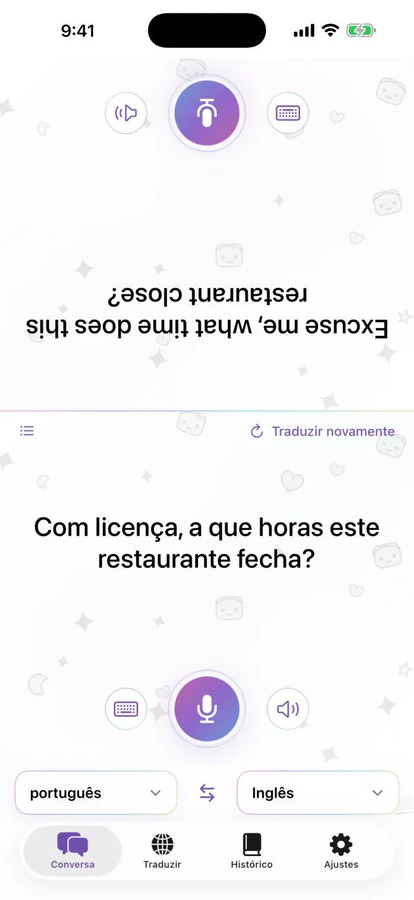
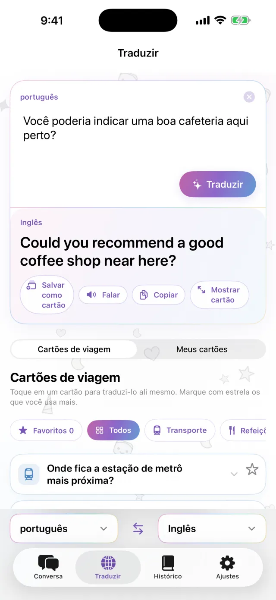
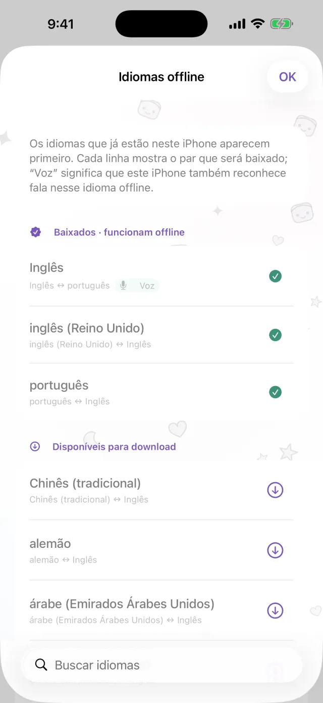
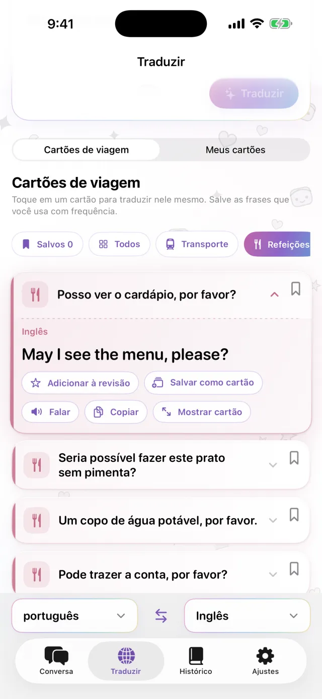
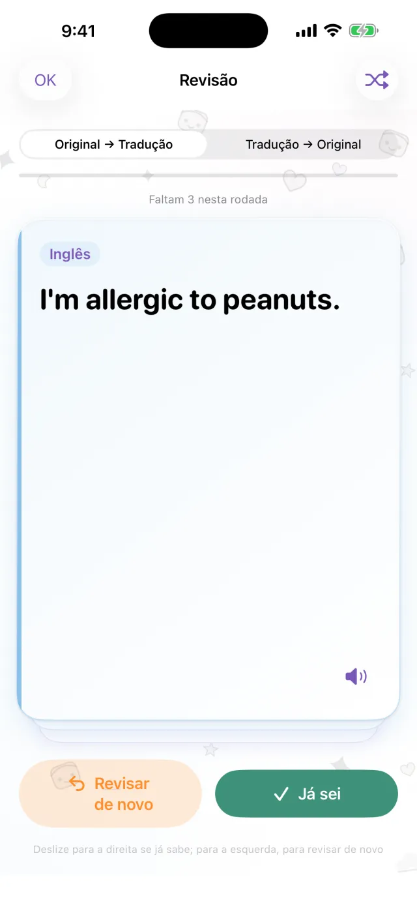

Tradutor para iPhone
Tradutor para iPhone
Coloque o iPhone entre vocês.
Só isso.
Toque no microfone e fale. A tradução aparece na outra metade da tela, virada para a outra pessoa. Quando ela responder, funciona do mesmo jeito. Baixe os idiomas antes e use sem conexão.
Em breve na App Store- Cerca de 20 idiomas
- Offline após o download
- Sem cadastro

Digitação
Sem poder falar alto? Digite.
Em um lugar silencioso, ou quando a outra pessoa fala rápido demais, é só digitar. Você pode ampliar a tradução para ocupar a tela toda e mostrar a ela.
- Copie a tradução ou ouça em voz alta
- Troque os dois idiomas com um toque

Offline
Traduza sem conexão
A tradução, o reconhecimento de fala e a leitura em voz alta são feitos no seu iPhone. Baixe os idiomas de que precisa antes da viagem e use no avião ou antes de comprar um chip. O que você fala não é enviado a nenhum servidor, e as gravações não são guardadas.

Cartões de frases
Salve o que você diz sempre
O endereço do hotel, uma alergia alimentar, a estação que você procura. Salve como cartões e não precisa digitar de novo. Toque em um cartão e ele é traduzido para o idioma da outra pessoa. Os Cartões de viagem para transporte, refeições, hospedagem e compras já vêm prontos.

Pro
Revise as frases salvas no dia certo
Toque na estrela de uma frase para salvá-la para revisão. Se você lembrar, ela volta depois de 1, 3, 7, 14 e 30 dias. Se não lembrar, aparece de novo no mesmo dia. Você pode ir do original para a tradução ou o contrário. Esta parte é do Pro.

Útil para
- Pedir a comida em um restaurante pequeno
- Passar o endereço ao motorista de táxi
- Explicar uma alergia na farmácia
- Deixar as malas na recepção do hotel
- Pedir informação na rua
Veja em 30 segundos
O Modo Avião está ativado neste vídeo.
O essencial
| Idiomas | Cerca de 20 (os idiomas que a Apple traduz no aparelho) |
|---|---|
| Offline | Sim, após baixar os idiomas |
| Entrada de voz | Sim. Alguns idiomas aceitam só digitação |
| Conta | Não é necessária |
| Preço | Grátis. O Pro é à parte (veja abaixo) |
| Requisitos | iPhone com iOS 18 ou posterior |
- Na primeira vez, você precisa de conexão para baixar os idiomas.
- Os preços aparecem na App Store, na moeda do seu país.
Grátis e Pro
Grátis
- Conversa frente a frente
- Digitação e exibição em tela cheia
- Tradução offline
- Cartões de viagem e 3 cartões seus
- Banner pequeno de anúncio
Pro
- Sem anúncios
- Quantos cartões quiser
- Histórico de traduções e revisão espaçada
Semanal, mensal ou compra única.
Antes de viajar, baixe os idiomas.
Em breve na App StoreiPhone · iOS 18 ou posterior · Download gratuito · Como funciona cada tela